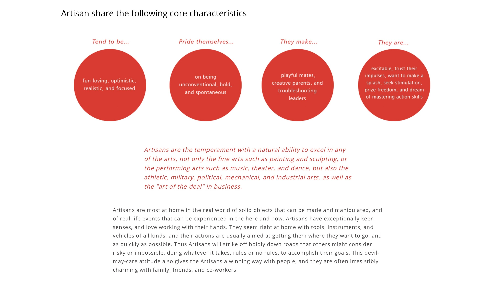
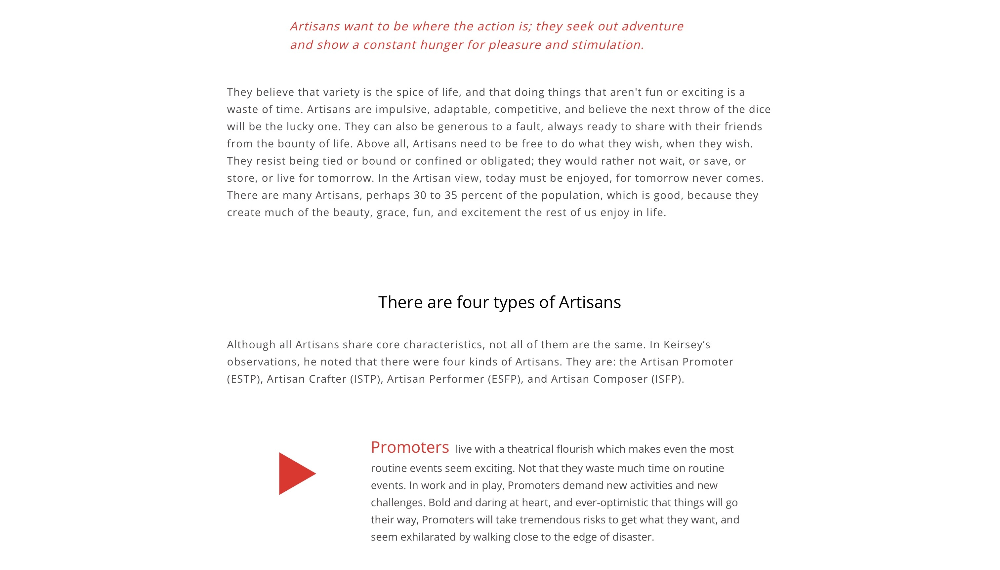
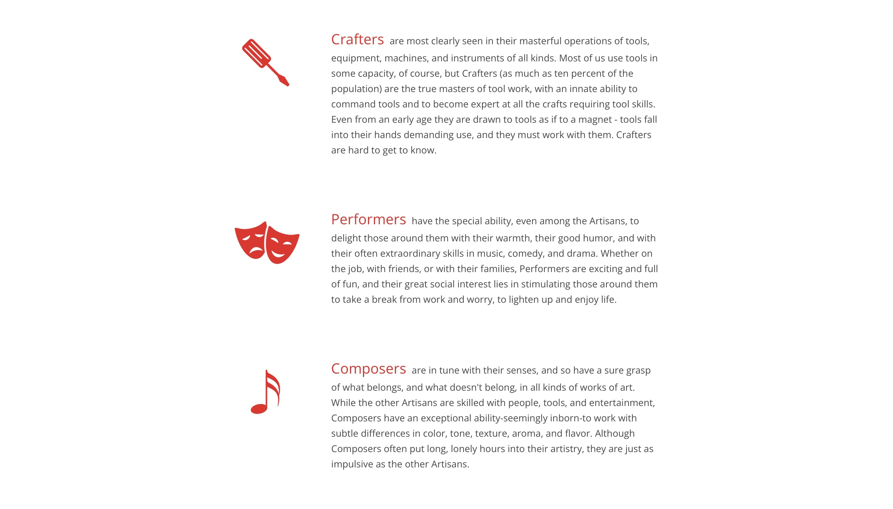

How my strongest trait, emotion, and hobby, etc. impact your school/academic life.
"Talent without working hard is nothing."
The person I look up to the most is Cristiano Ronaldo, one of the world's greatest football (soccer) players. This quote from him resonates deeply with me and encapsulates his philosophy of success. Cristiano Ronaldo is not only a sporting icon but also an embodiment of dedication, discipline, and hard work. What truly sets him apart is his relentless work ethic and his commitment to pushing his limits day in and day out.
I chose Cristiano Ronaldo as my hero for several reasons:
The Kierysey Temperant Sorter Personality Test categorized me as an "artisan".
  As I reflect on the results of the Keirsey Temperament Sorter personality test, I find that the description of the Artisan temperament aligns with some aspects of my personality and behavior. The characteristics attributed to Artisans, such as being fun-loving, optimistic, and focused, resonate with me in many ways. I do tend to seek enjoyment and stimulation in various activities, and I value personal freedom and spontaneity. However, it's important to note that the validity of personality tests can be subjective. While the general description of Artisans may capture some of my traits accurately, it doesn't capture the entirety of my personality. People are complex, and personality traits can vary depending on different situations and contexts. Additionally, the description of Artisans provides a broad overview of the temperament, but individual differences within this category can be significant.
In my case, I appreciate the emphasis on adaptability and a hunger for pleasure and variety mentioned in the Artisan description. I do believe that life should be enjoyed, and I often seek out new experiences and challenges. At the same time, I recognize that there are aspects of my personality that may not fit neatly into this description. Furthermore, the test indicates that there are four types of Artisans, and the specific type within this temperament can vary. In my case, I may exhibit traits from multiple Artisan types, making it even more challenging to pinpoint a precise fit. In conclusion, while the Keirsey Temperament Sorter provides an interesting perspective on personality traits, I believe that it's important to take such assessments with a grain of salt. They can offer valuable insights into one's personality but should not be viewed as definitive or all-encompassing. Individual personalities are complex and multifaceted, and no single test can fully capture their intricacies.